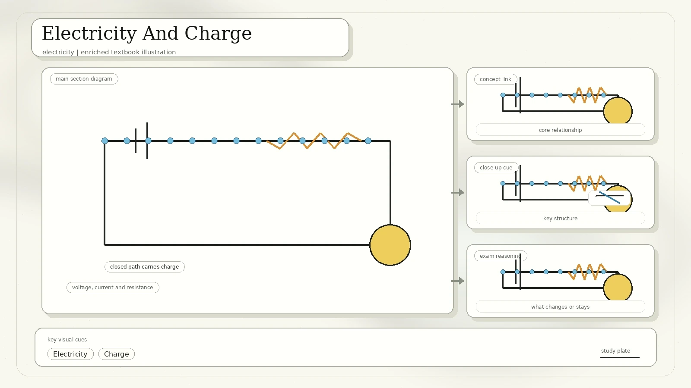
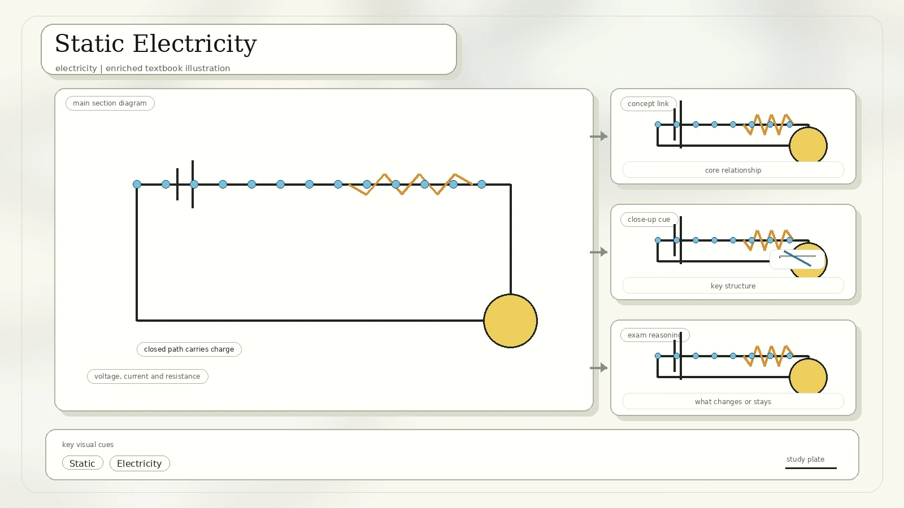
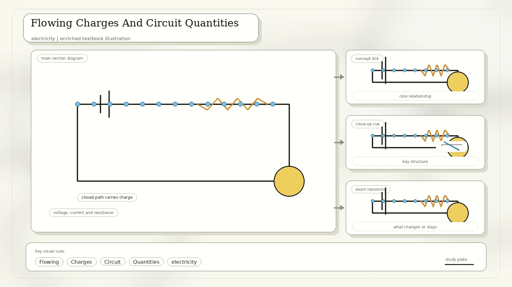
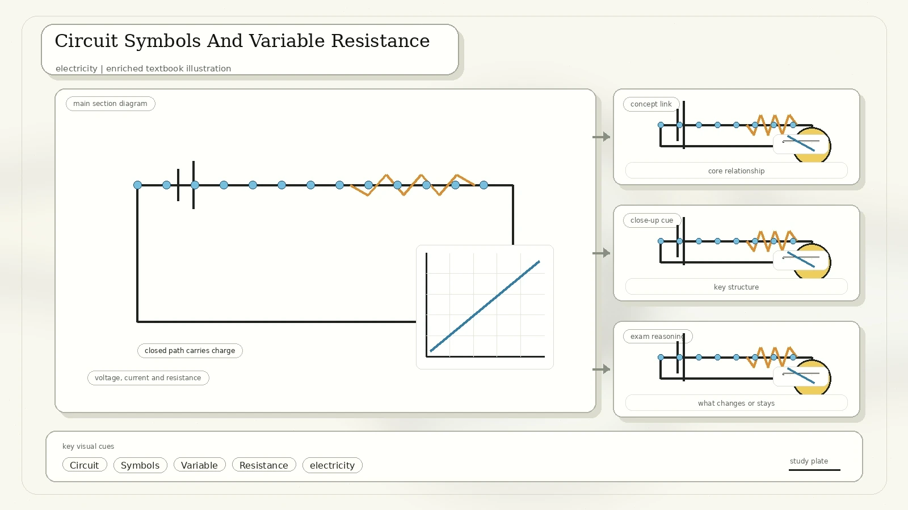
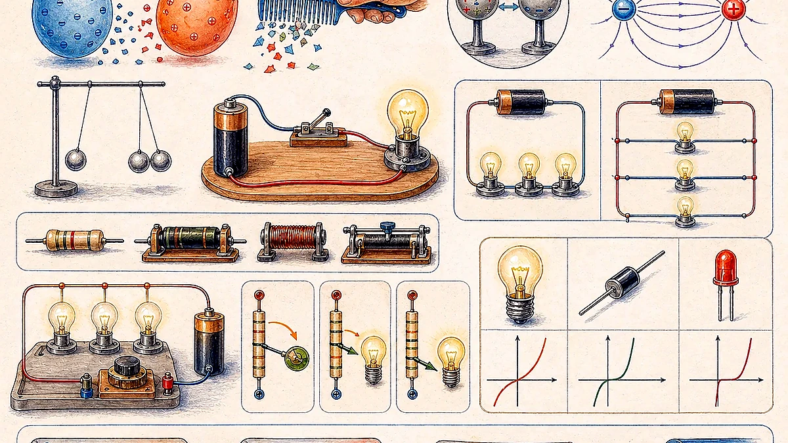
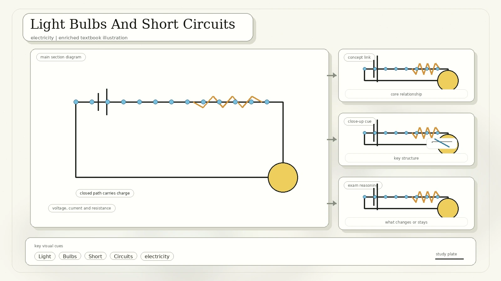
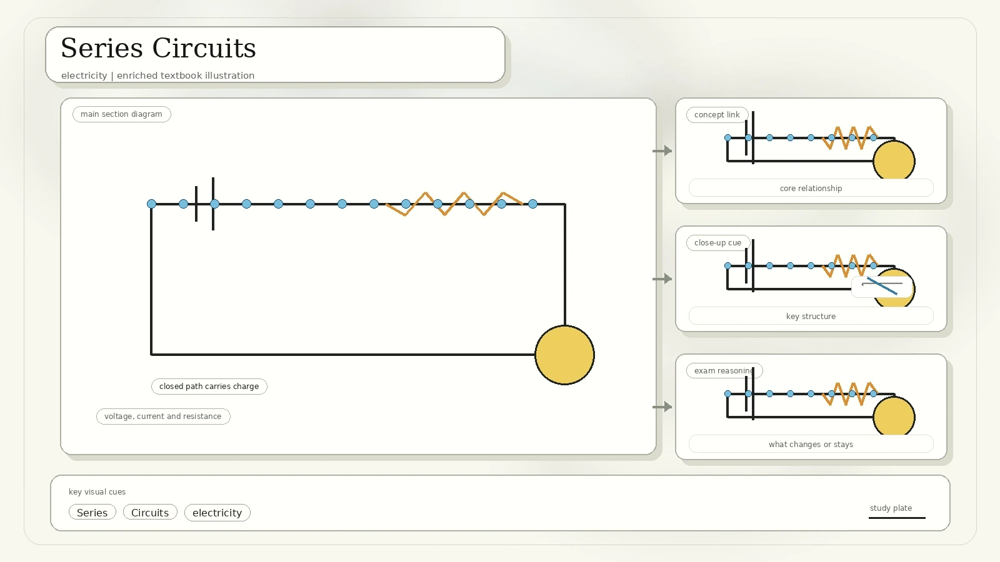
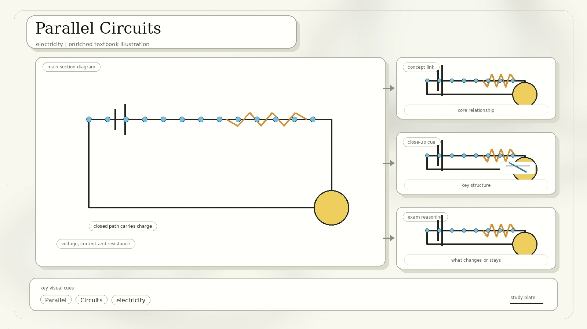
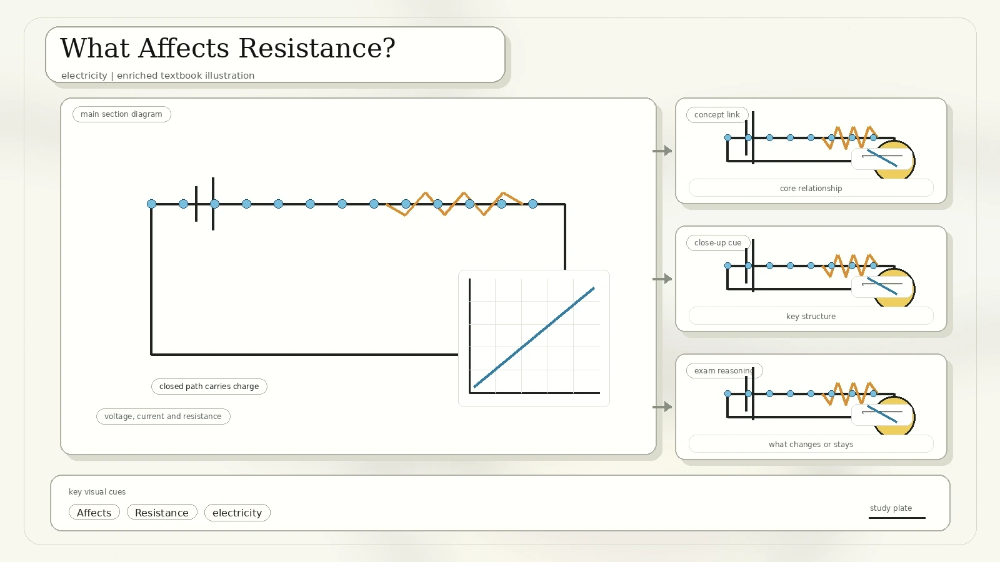
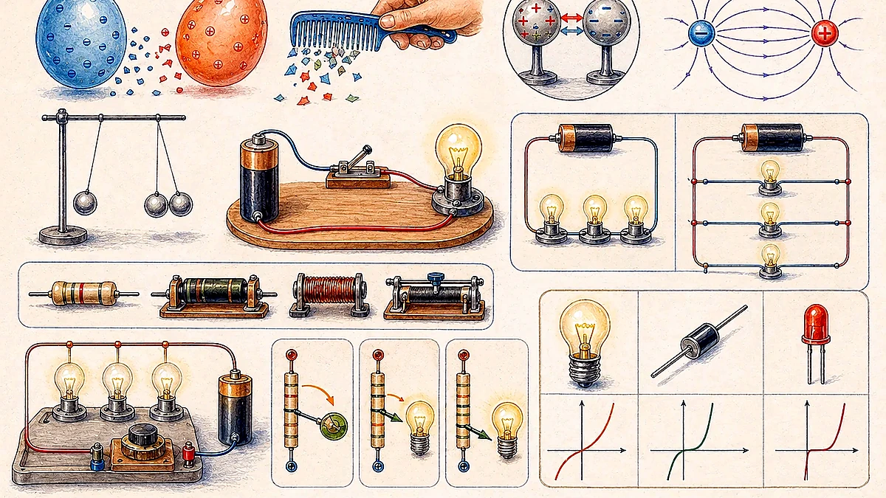

Electricity And Charge
Electricity is a set of physical phenomena associated with the presence and motion of matter that has electric charge. It is a form of energy transfer and is closely related to magnetism as part of electromagnetism.

Charge is represented by Q. Like charges repel and unlike charges attract.
An attractive or repulsive force between charged particles.
Bulbs, electric circuits, static friction on clothing, and small shocks from a doorknob.
Comparison from the scan: electric force is similar to gravitational force, but gravity acts between masses and electrostatic force acts between charged bodies.
Static Electricity
Static electricity is an imbalance of electric charges within or on the surface of a material. The charge remains until it can move away through electric current or electrical discharge.

Rubbing a comb on cloth can make it attract tiny pieces of paper because charges in the paper are rearranged.
A charged balloon or ruler can attract paper or salt grains, showing electrostatic attraction at a distance.
Flowing Charges And Circuit Quantities
Current is the flow of charge. Free electrons naturally move toward a region lacking electrons when pushed by a potential difference. A circuit is a loop that allows charge to move from one place to another.

| Quantity | Symbol And Unit | Meaning |
|---|---|---|
| Voltage | V, volt | Difference in charge or electrical potential between two points. |
| Current | I, ampere | Rate at which charge flows. A current of 1 A means 1 coulomb of charge per second. |
| Resistance | R, ohm | A material's tendency to resist the flow of charge. |
Circuit Symbols And Variable Resistance
Circuit symbols let us draw circuit function rather than realistic pictures. The scan includes cells, switches, bulbs, ammeters, voltmeters, resistors, variable resistors, and meters.

An ammeter measures current and is placed in series. A voltmeter measures potential difference and is placed across a component.
A rheostat changes resistance by changing the effective length of conducting material. It can control volume, brightness, or dimmer switches.
Ohm's Law
The current through a conductor between two points is directly proportional to the voltage across those two points, provided resistance remains constant.

Formula: V = I R. On an I-V graph for an ohmic resistor, a straight line through the origin shows direct proportionality.
Light Bulbs And Short Circuits
A bulb contains a filament, a glass cover, metal casing, metal tip, and insulating black part. The filament is usually made of tungsten and the bulb is filled with argon gas.

The metal tip and metal casing must be connected to different terminals of the battery.
Connecting a pure conductor directly across a component is dangerous because current can flow very quickly and bypass the useful part of the circuit.
Series Circuits
A series circuit has only one electrical path. Electricity flows from one side of the battery to the other through each component in order.

I = I1 = I2 = I3
Vtotal = V1 + V2 + V3
Rtotal = R1 + R2 + R3
Parallel Circuits
A parallel circuit has more than one electrical path. Components in different branches can continue working even when another branch is broken.

Itotal = I1 + I2 + I3
V = V1 = V2 = V3
1/Rtotal = 1/R1 + 1/R2 + 1/R3
What Affects Resistance?
The resistance of a material depends on the material type, length, thickness, and temperature.

Better conductors have lower resistance.
Longer materials have higher resistance.
Thicker materials have lower resistance.
Higher temperature usually increases resistance in metal conductors.
When Ohm's Law Does Not Apply
A filament lamp does not obey Ohm's law over a large range because its filament heats up. As temperature rises, resistance changes, so voltage is not directly proportional to current.

Potential Divider Circuits
A voltage divider consists of two devices, usually resistors, connected in series. The supply voltage is divided across the resistors according to their resistance values.

Key idea: in a series divider, the larger resistor gets the larger share of the supply voltage. If two equal 100 ohm resistors are connected across 6 V, each has 3 V.
What To Remember
Like charges repel and unlike charges attract.
Use V = I R only when resistance is constant.
Current is the same everywhere; voltage and resistance add.
Voltage is the same across branches; current splits.